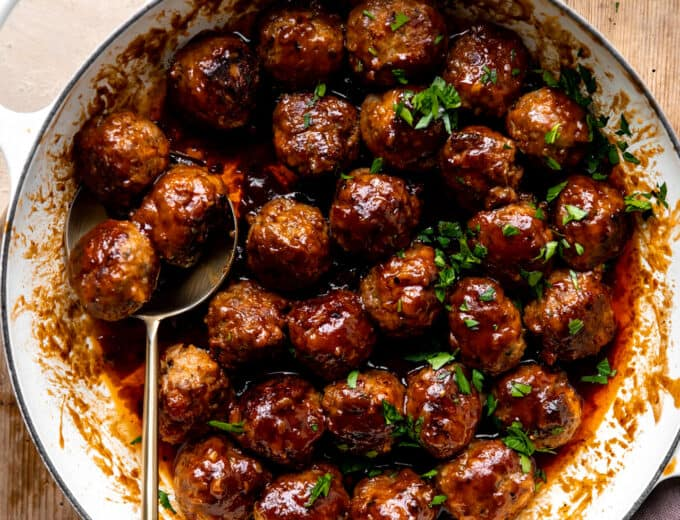

Meatballs

Description
These indulgent meatballs are made with bacon and ground
beef and simmered in a bourbon bbq sauce. Perfect to
serve as an appetizer for the big game or on a sandwich
for family dinner!
Rich and flavorful Bacon Meatballs simmered in an
indulgent Bourbon BBQ sauce. Ready in 30 minutes, they
make a perfect appetizer or a delicious weeknight family
dinner served on sandwich rolls or over a bed of creamy
mashed potatoes.
Ingredients
- Ground Beef
- Bacon
- Beef Broth
- Onion
- Salt
- Bourbon
- Oil
- Egg
- Chili Powder
- Parsley
- Bread Crumbs
- BBQ Sauce
Steps
- Process the bacon with onion. This ensures a smooth
finish to the meatballs by grinding up the bacon and
the onion. If you don’t have a food processor you can
use a blender, just be sure not to over-blend. Or you
can finely dice those ingredients if needed.
- Mix ingredients for meat mixture. Using your hands
mix up the meats with the remaining ingredients
needed.
- Form Meatballs. Using a cookie scoop, or tablespoon,
scoop up the meat and roll with your hands to form
round ball shapes about 1 inch in diameter. Using
a scoop helps to ensure a consistent size.
- Cook the meatballs in a skillet until cooked
throughout. Remove from the skillet, pour out any
excess grease and then add in the sauces.
- Simmer in the sauce. Let the meatballs cook in the
sauce for at least 10 minutes (can always do this
longer for more flavor).